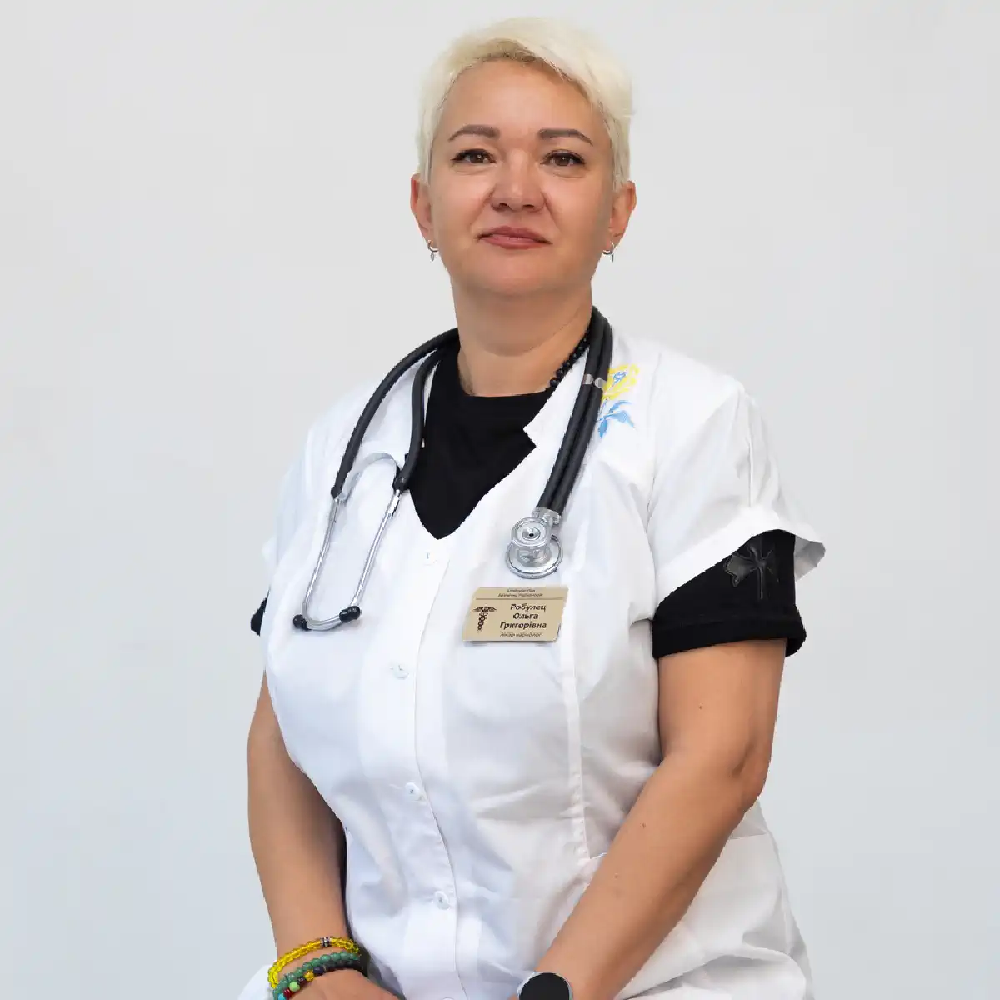

+38(068) 79 72 782
+38(068) 79 72 782Виведення із запою Київ
Тверезість починається сьогодні


Безкоштовна консультація, працюємо цілодобово 24/7
Тверезість починається сьогодні
Виведення із запою — це термінова наркологічна послуга, спрямована на стабілізацію стану пацієнта після тривалого вживання спиртного. Процедура передбачає детоксикацію організму із застосуванням крапельниць від алкоголю, які допомагають вивести токсичні продукти розпаду етанолу, відновити водно-електролітний баланс і підтримати роботу життєво важливих органів. Запійний стан становить серйозну загрозу для здоров’я, оскільки може загострити хронічні захворювання та підвищити ризик тяжких ускладнень з боку серцево-судинної системи, печінки й нервової системи. Комплексне виведення із запою не лише усуває виражені симптоми похмілля, а й знижує патологічну тягу до спиртного, полегшуючи подальше відновлення. Під час запою організм зазнає сильної інтоксикації, яка супроводжується головним болем, нудотою, тремором, підвищеною тривожністю, порушенням сну та стрибками артеріального тиску. Без кваліфікованої медичної допомоги такі стани можуть прогресувати й призводити до судом, порушення свідомості та інших небезпечних наслідків. Саме тому виведення із запою має проводитися під контролем лікаря-нарколога, який оцінює загальний стан пацієнта, тривалість вживання алкоголю та наявність супутніх захворювань.
Медикаментозне виведення із запою підбирається індивідуально. До складу крапельниць від запою можуть входити детоксикаційні розчини, вітаміни групи B, препарати для підтримки печінки та серця, а також засоби для нормалізації психоемоційного стану. Такий підхід дозволяє знизити навантаження на організм, прискорити виведення токсинів і поступово повернути пацієнта до стабільного самопочуття. Уже в перші години після початку терапії більшість пацієнтів відзначають полегшення стану, зменшення тривожності та покращення сну. Вихід із запою також є важливим етапом підготовки до подальшого лікування алкогольної залежності. Після стабілізації стану лікар може порекомендувати додаткові методи терапії, спрямовані на запобігання повторним запоям і формування стійкої тверезості. Своєчасне звернення по наркологічну допомогу допомагає не лише безпечно перервати запій, а й знизити ризики рецидивів у майбутньому, зберігши здоров’я та якість життя пацієнта.
Негайний виклик нарколога стає критично важливим при виникненні таких станів: тривалий запій, що триває понад три дні, виражений абстинентний синдром, який проявляється сильним тремором, судомами, галюцинаціями або агресивною поведінкою. Також термінова допомога необхідна при загостренні хронічних захворювань, втраті свідомості, нестримному блюванні або сильних болях у ділянці серця. У таких ситуаціях кожна хвилина має значення для запобігання серйозним, інколи незворотним ускладненням, таким як інсульт, інфаркт, набряк мозку або зупинка дихання.
Своєчасний виїзд кваліфікованого нарколога дозволяє не лише зняти гострі симптоми інтоксикації, а й оцінити загальний стан пацієнта, виміряти життєво важливі показники, скоригувати тиск, пульс і рівень цукру в крові, а за потреби підключити інфузійну терапію безпосередньо вдома. Це особливо важливо для літніх пацієнтів або людей із хронічними захворюваннями, для яких відвідування клініки може бути небезпечним або ускладненим. Швидкість приїзду нарколога є однією з ключових переваг служби UmbrellaPlus. У середньому час очікування спеціаліста по Києву становить від 30 до 60 хвилин. Для районів Київської області час приїзду може збільшуватися до 60–90 хвилин залежно від віддаленості населеного пункту та дорожньої обстановки. Такий оперативний виїзд дозволяє максимально швидко розпочати лікування, стабілізувати стан пацієнта та знизити ризик ускладнень.
Крім того, нарколог приїжджає повністю оснащеним: з необхідними медикаментами, інфузійними системами та обладнанням для моніторингу життєво важливих показників. Це дає змогу надавати комплексну медичну допомогу вдома, включно зі зняттям алкогольної інтоксикації, корекцією електролітного балансу, лікуванням судом і відновленням нормальної роботи серцево-судинної та нервової систем. Пацієнти та їхні родичі отримують не лише якісне лікування, а й психологічну підтримку, що допомагає знизити тривожність і стрес у складній ситуації. Виїзд нарколога додому — це зручний і безпечний спосіб надання екстреної медичної допомоги, особливо коли йдеться про тяжкі форми алкоголізму, передозування або ускладнення хронічних захворювань. Чим швидше буде викликано спеціаліста, тим вищий шанс не лише зняти гострі симптоми, а й запобігти розвитку критичних для життя станів, забезпечивши пацієнтові безпечне відновлення та стабілізацію здоров’я.
Склад крапельниці для зняття алкогольної інтоксикації під час виведення із запою може включати широкий спектр препаратів, кожен з яких виконує свою специфічну функцію та забезпечує комплексне відновлення організму після алкогольного отруєння.
Крапельниця від запою вдома дозволяє не лише швидко зняти алкогольну інтоксикацію, а й знизити навантаження на внутрішні органи, запобігти небезпечним ускладненням і прискорити відновлення організму. Пацієнт отримує кваліфіковану медичну допомогу в комфортних умовах, а родичі можуть бути впевнені в безпеці та ефективності процедури.
Вартість процедури виведення із запою в Києві починається від 2700 грн.
| Популярні Послуги | Вартість |
|---|---|
| Виведення із запою вдома | Від 2700 грн |
| Крапельниця від алкоголю | Від 2700 грн |
| Крапельниця від наркотиків | Від 3000 грн |
| Кодування від алкоголізму Київ | Від 6000 грн |
Оперативність є критично важливим фактором в екстреній наркологічній допомозі. Наркологічна служба UmbrellaPlus у Києві прагне забезпечити максимально швидкий час реагування, зазвичай у межах 30–60 хвилин з моменту виклику. Така швидкість приїзду нарколога є стандартом для невідкладної допомоги та дозволяє негайно розпочати стабілізацію стану пацієнта, що особливо важливо при тяжких формах алкогольної інтоксикації та тривалих запоях.
Кожна хвилина зволікання у стані запою може призвести до незворотних наслідків для здоров’я та життя пацієнта. Різке припинення вживання алкоголю без медичної підтримки може спровокувати розвиток алкогольного делірію («білої гарячки»), судом, серцево-судинних ускладнень, інсультів, інфарктів та інших критичних станів. Саме тому така оперативність — це не просто зручність, а життєво необхідний захід, що дозволяє мінімізувати ризики та запобігти тяжким ускладненням. Одразу після прибуття лікар проводить експрес-діагностику стану пацієнта, вимірює тиск, пульс, рівень цукру в крові та за потреби робить ЕКГ. Це дає змогу оперативно оцінити ступінь інтоксикації, виявити хронічні захворювання та визначити оптимальну схему лікування. Залежно від стану пацієнта нарколог може підключити інфузійну терапію, крапельниці з дезінтоксикаційними розчинами, вітамінами, гепатопротекторами та седативними препаратами, а також за потреби провести медикаментозне купірування абстинентного синдрому.
Не потрібно витрачати час на збори, дорогу до клініки або очікування у приймальному відділенні. Кваліфікована допомога надається безпосередньо вдома, у комфортній і спокійній обстановці. Такий підхід мінімізує стрес для пацієнта та його близьких, знижує тривожність, покращує психологічний стан і сприяє швидшому відновленню організму. Пацієнти отримують комплексне спостереження нарколога протягом усієї процедури, а за потреби лікар коригує терапію, забезпечуючи безпеку та ефективність лікування на кожному етапі. Крім того, виїзд нарколога додому дозволяє родичам бути впевненими, що пацієнт отримує професійну медичну допомогу, а швидкість реагування стає ключовим фактором успішного та безпечного відновлення після запою.
Крапельниця від алкоголю є основою детоксикаційної терапії при виведенні із запою. Її основне завдання — швидке та ефективне виведення токсинів алкоголю з організму, відновлення порушеного водно-сольового та електролітного балансу, а також підтримка роботи печінки, серця й нервової системи. Інфузійна терапія допомагає не лише полегшити симптоми похмілля та абстинентного синдрому, а й знизити ризик небезпечних ускладнень, які можуть виникнути при тривалому вживанні спиртного або різкому припиненні алкоголю.
Склад крапельниці завжди індивідуальний і підбирається наркологом після ретельної оцінки стану пацієнта. Під час вибору компонентів враховуються вік пацієнта, тривалість запою, наявність хронічних захворювань, алергічні реакції, а також поточний стан серцево-судинної та нервової систем. До складу крапельниці можуть входити дезінтоксикаційні розчини (Рінгера, Хартмана), глюкоза для підтримки енергетичних ресурсів організму, вітаміни групи B для захисту та відновлення нервової системи, гепатопротектори для підтримки печінки, а також седативні препарати для нормалізації психоемоційного стану та сну.
Вихід із запою — це складний і багатоступеневий процес, який потребує комплексного підходу до відновлення організму. Самостійні спроби припинити вживання алкоголю без медичного контролю можуть бути вкрай небезпечними. Вони підвищують ризик розвитку тяжкого абстинентного синдрому, судом, галюцинацій, порушення серцевого ритму, стрибків тиску, а в тяжких випадках — загрозливих для життя ускладнень. Саме тому при запійних станах і вираженій алкогольній інтоксикації рекомендується звертатися по професійну медичну допомогу. Кваліфікований нарколог проведе детальну діагностику, підбере індивідуальний склад крапельниці та забезпечить комплексне спостереження за пацієнтом протягом усієї процедури. Такий підхід дозволяє не лише безпечно зняти інтоксикацію, а й прискорити відновлення організму, стабілізувати роботу внутрішніх органів і знизити ризик повторного запою.
Прокапатися від алкоголю вдома — це сучасний, безпечний і максимально комфортний спосіб вивести організм із запою, зберегти здоров’я пацієнта та забезпечити ефективне відновлення у звичній обстановці.
Найбезпечніший і найефективніший спосіб вийти із запою — це звернення до кваліфікованих спеціалістів. Виклик нарколога та проведення інфузійної терапії (крапельниці) дозволяють швидко й надійно впоратися з алкогольної інтоксикацією, забезпечуючи організму необхідну підтримку. Крапельниця від алкоголю оперативно доставляє всі необхідні розчини для детоксикації, відновлення водно-електролітного балансу та нормалізації роботи внутрішніх органів.
Самолікування в подібних випадках є вкрай небезпечним. Спроби самостійно впоратися з наслідками запою без професійної допомоги можуть призвести до серйозних ускладнень: серцево-судинних кризів, інсультів, судом, гострого ураження печінки та нирок, а також небезпечного для життя абстинентного синдрому. Звернення до досвідченого нарколога дозволяє безпечно й максимально ефективно вивести організм із запою, знизити навантаження на внутрішні органи та запобігти розвитку небезпечних для життя станів. Професійна інфузійна терапія гарантує комфорт, повну конфіденційність і швидке полегшення як фізичних, так і психоемоційних симптомів інтоксикації.
Нарколог — це не просто лікар, який ставить крапельницю від запою; це висококваліфікований спеціаліст із глибокими знаннями у сфері наркології, психіатрії та загальної терапії. Його роль у процесі виведення із запою є ключовою та багатогранною, адже від його дій залежить не лише швидке полегшення стану пацієнта, а й запобігання можливим ускладненням, відновлення організму та мотивація до подальшого лікування залежності.
Кваліфікований нарколог — це гарантія безпечного та ефективного виходу із запою. Його професіоналізм забезпечує комплексний підхід: від діагностики та детоксикації до психологічної підтримки та призначення подальшого лікування. Звернення до спеціаліста значно підвищує шанси на швидке відновлення, зниження ризику ускладнень і успішне подолання алкогольної залежності.
Для багатьох людей, які стикаються з алкогольною залежністю, страх розголосу, осуду, втрати роботи або соціального статусу стає серйозною перешкодою на шляху до звернення по професійну допомогу. Людина побоюється, що її проблема стане надбанням громадськості, що може негативно вплинути на репутацію, кар’єру та особисті стосунки. Ці страхи часто призводять до відкладання лікування, погіршуючи фізичний і психічний стан пацієнта. Анонімність при виведенні із запою в Києві забезпечує пацієнтові психологічний комфорт і відчуття безпеки. Вона дозволяє повністю зосередитися на процесі одужання, не побоюючись, що хтось дізнається про проблему. У таких умовах пацієнт може відкрито обговорювати свої труднощі, ставити запитання та чесно розповідати про звички, не відчуваючи сорому чи тривоги за своє становище в суспільстві.
Анонімність — це не просто формальність, це ключовий елемент успішного лікування. Вона допомагає налагодити довірливі стосунки між лікарем і пацієнтом, створює безпечний простір для відвертої розмови та сприяє більш ефективній роботі над залежністю. Пацієнт, який упевнений у конфіденційності процедур, легше приймає рекомендації лікаря, коректно виконує призначення та швидше досягає позитивних результатів. Таким чином, дотримання повної конфіденційності при виведенні із запою — це не лише етичний обов’язок спеціаліста, а й важливий фактор, що безпосередньо впливає на швидкість і якість відновлення пацієнта. Це створює основу для успішного подолання залежності та повернення до нормального, повноцінного життя.
Прискорена детоксикація та регідратація. Основна функція крапельниці від алкоголю — це швидке та ефективне очищення організму від токсинів, які утворюються при розпаді етанолу, насамперед ацетальдегіду. Внутрішньовенне введення спеціальних розчинів, таких як ізотонічний розчин хлориду натрію та глюкоза, дозволяє миттєво заповнити дефіцит рідини, спричинений зневодненням, і прискорює роботу нирок з виведення отруйних продуктів розпаду алкоголю. Такий метод детоксикації забезпечує більш м’яке та безпечне очищення організму порівняно зі спробами самолікування або використанням народних засобів.
Відновлення дефіциту життєво важливих елементів. Тривале вживання алкоголю виснажує запаси вітамінів, особливо групи B (B1, B6, B12), а також електролітів, таких як калій і магній, які життєво необхідні для нормального функціонування нервової та серцево-судинної систем. Крапельниця містить ці елементи, що дозволяє нормалізувати обмінні процеси, покращити клітинний метаболізм, відновити роботу серця, печінки, нирок та інших внутрішніх органів, а також зміцнити імунітет після інтоксикації.
Купірування симптомів абстинентного синдрому. Алкогольний абстинентний синдром супроводжується сильною тривожністю, безсонням, тремором, нудотою, головним болем і порушенням серцевого ритму. Крапельниця містить препарати, спрямовані на пом’якшення цих проявів: седативні засоби допомагають знизити тривожність і нормалізувати сон, протиблювотні препарати усувають нудоту та блювання, а кардіопротектори стабілізують серцевий ритм і артеріальний тиск. Такий комплексний підхід забезпечує комфортне й безпечне відновлення пацієнта, знижує ризик ускладнень і прискорює процес виходу із запою.
Відновлення психоемоційного стану. Окрім фізичної детоксикації, крапельниця допомагає нормалізувати психоемоційний стан пацієнта. Зниження тривожності, покращення сну та полегшення симптомів абстиненції створюють основу для подальшого лікування залежності та підтримують мотивацію пацієнта до реабілітації.
Таким чином, крапельниця від алкоголю — це не просто спосіб полегшити похмілля, а повноцінна медична процедура, спрямована на детоксикацію, відновлення дефіциту поживних речовин, стабілізацію роботи внутрішніх органів і купірування тяжких симптомів абстинентного синдрому.
Запій — це серйозна загроза здоров’ю, що потребує негайного втручання спеціалістів. Самолікування та народні методи неефективні й небезпечні. Лише професійна допомога дозволяє безпечно й анонімно вийти із запою в домашніх умовах, з урахуванням стану та потреб пацієнта.
Вивід із запою — найважливіший перший крок до тверезого та стабільного життя. Щоб уникнути рецидивів, необхідний комплексний підхід: медикаментозна підтримка, психотерапія, реабілітація та, за потреби, кодування. Історії одужання показують, що своєчасне лікування допомагає відновити здоров’я, стосунки та кар’єру. Не відкладайте звернення по допомогу. У Києві служба UmbrellaPlus працює цілодобово, анонімно та з гарантією результату.
Зателефонуйте за номером: +38(050-021-69-57)
Так, ми суворо дотримуємося повної конфіденційності на всіх етапах лікування. Інформація про пацієнта, діагноз та проходження терапії не передається третім особам. Звернення до нас не тягне за собою постановку на облік. Ви можете бути впевнені у безпеці та анонімності.
Програма лікування розробляється індивідуально після консультації з фахівцем. Враховуються вид залежності, її тривалість, фізичний та психологічний стан пацієнта. Такий підхід дозволяє підвищити ефективність терапії та знизити ризик зриву. Ми не використовуємо шаблонні рішення.
Так, ми супроводжуємо пацієнтів і після основного курсу лікування. Проводяться консультації, рекомендації щодо адаптації та профілактики рецидивів. За потреби можлива подальша психологічна підтримка. Це допомагає зберегти результат та повернутися до повноцінного життя.
Анонимно

Ну в хлопців просто золоті руки й світла голова, мене капали Олексій та Владислав, буквально за декілька сеансів я наче заново народився, до цього пив більше 3х тижнів, не міг зупинитись, дуже радий що знайшов саме цих спеціалістів, всім рекомендую
Анонимно
В течение нескольких лет я злоупотреблял алкоголь, что привело к увольнению с работы и вызвало у меня мысли о суициде. Понимая, что такой образ жизни неприемлем, я обратился за помощью в клинику “Амбрела”. Здесь я смог преодолеть свою зависимость от спиртного благодаря заботливым и опытным врачам, а также эффективной системе лечения. Спустя более года я полностью избавился от желания употреблять алкоголь, и теперь моя жизнь вернулась в норму. Я даже не приближаюсь к спиртному! Благодарю врачей клиники “Амбрела” за их помощь и заботу.
Анонимно
Я обращался за помощью в различные клиники, пытаясь избавиться от своей зависимости от алкоголя, но без особых успехов. Никак не мог справиться с желанием прибегнуть к бутылке, пока друг не посоветовал мне обратиться в центр “Амбрелла”. Я записался на прием и был поражен заботливым отношением к пациентам. Уже прошло два года, и теперь я смотрю на алкоголь с абсолютной равнодушием, активно занимаюсь спортом и улучшил отношения в семье. Благодаря центру “Амбрелла” моя жизнь была спасена от алкогольной зависимости!
Анонимно
Хочу выразить свою благодарность врачам из центра алкоголизма “Амбрела” за то, что они буквально спасли мою жизнь. В течение последнего года я сильно увлекался питьем, и все это привело к катастрофическим последствиям. Хотя я ходил на терапевтические сеансы, но безрезультатно. Тогда я нашел адрес клиники “Амбрела” в интернете, изучил отзывы и информацию о центре, и записался на прием. Там мне сразу предложили методику лечения, которая помогла не только справиться с физической ломкой, но и психической зависимостью от алкоголя. Не буду распространяться, скажу только одно - после пребывания в этой клинике я стал другим человеком, и навсегда забыл, что такое привкус алкоголя. Больше меня не тянет на это! Я искренне верю, что в центре “Амбрела” трудятся настоящие целители душ!
Анонимно
После сложного развода мой сын начал подавлять свою обиду и горе употреблением алкоголя. Он старался скрывать это от меня, но я, как мать, почувствовала, что что-то не так. В конечном итоге, ситуация стала критической. Моя знакомая посоветовала мне обратиться в клинику “Амбрела”. Я была приятно удивлена их работой! Они помогли сыну преодолеть очередной период злоупотребления алкоголем, и с тех пор прошел уже более года, и он совсем не пьет.
Анонимно
Благодаря вашей помощи, моя семья была спасена. Я с трудом уговорила мужа начать лечение, и последний каплей был пьяное ДТП. К счастью, в аварии никто не пострадал, но это был для него сигнал к действию. Он наконец согласился пройти курс лечения на дому, в стационар не хотел ложиться. Лечение было трудным, и были моменты, когда срыв был настолько близок, но благодаря вашему центру Амбрелла мы справились с этим.
Анонимно
Для меня эта клиника стала настоящим спасением! Долгое время я упорно отказывался от лечения, уверен был, что со мной все в порядке. Но к счастью, семья уговорила меня попробовать. И сегодня я чувствую себя невероятно счастливым, осознавая, что мне абсолютно не нужен алкоголь. Огромное спасибо за помощь и поддержку, которые я получил здесь! Я благодарен вам за новую возможность жить полноценной и счастливой жизнью!
Анонимно
Выражаю благодарность ребятам, которые оказали мне помощь и не отвернулись. Уже 10 месяцев я остаюсь чистой. Благодарю за то, что помогли найти новый путь в моей жизни.
Номер телефону:
+380 (68) 797 27 82
+380 (50) 021 69 57
Адресу наркологічного центра вашого міста уточнюйте за
телефоном
Працюємо: Київ, Одеса, Львів, Харків, Дніпро, Запоріжжя,
Черкасах, Чугуєві, Чорноморську, Кам'янському
Telegram: t.me/umbrellaplus
Графік работы: Цілодобово